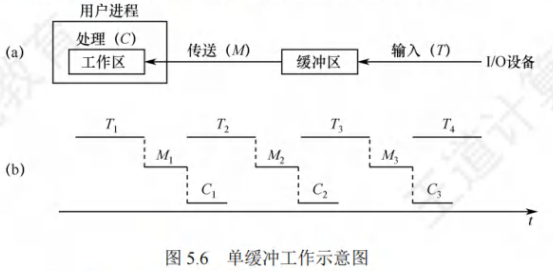
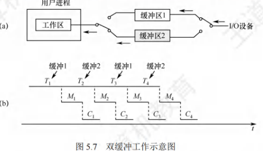
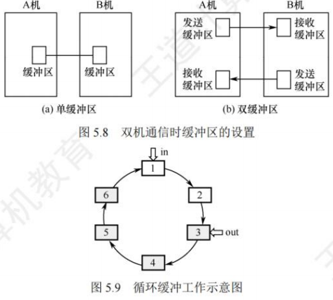
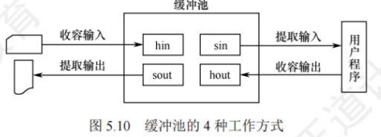
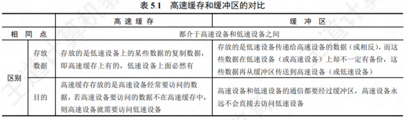
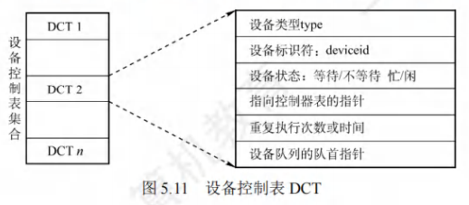
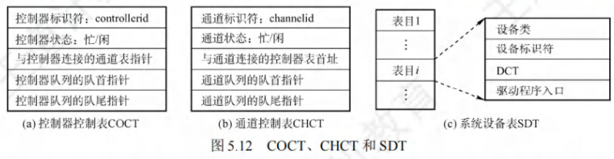
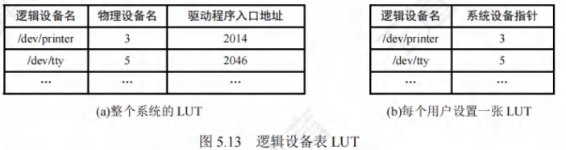

设备独立性软件
[toc]
设备独立性软件
设备独立性软件（又称设备无关软件）是I/O系统的高层软件，位于设备驱动程序之上，核心目标是屏蔽设备硬件差异，实现“设备独立性”（应用程序使用逻辑设备名，无需关注物理设备）。其功能边界并非绝对（部分功能可能因效率权衡下放至驱动程序），但核心需覆盖所有设备的公有操作。
核心功能（高频考点）
- 逻辑设备名与物理设备名映射：
- 应用程序通过“逻辑设备名”（如“打印机”“磁盘”）请求设备，软件通过逻辑设备表（LUT） 将其转换为“物理设备名”（如“/dev/lp0”“/dev/sda1”），实现设备无关性。
- 设备分配与回收：
- 管理独占设备（如打印机）的分配，避免并发冲突；回收进程释放的设备，更新设备状态（忙→闲）。
- 设备保护与权限控制：
- 检查用户对设备的访问权限（如普通用户不可直接操作系统磁盘），防止未授权使用。
- 缓冲管理：
- 维护系统级缓冲区（如磁盘缓冲池），平衡CPU与设备的速度差异，减少I/O次数。
- 差错控制：
- 处理I/O过程中的错误（如磁盘读错误、打印机缺纸），触发重试或向用户反馈错误信息。
- 提供统一接口：
- 向上层（用户层）暴露标准化I/O接口（如
read()/write()），无论底层是磁盘、打印机还是键盘，接口形式完全一致，降低应用程序开发难度。
- 向上层（用户层）暴露标准化I/O接口（如
高速缓存与缓冲区
高速缓存与缓冲区均用于缓解CPU与I/O设备的速度差异，但两者的缓存对象、目的和实现方式存在本质区别，是考研高频对比考点。
磁盘高速缓存（Disk Cache）
定义
利用内存中的部分空间暂存从磁盘读取的盘块数据，逻辑上属于磁盘，物理上驻留内存，核心目的是减少磁盘I/O次数，提升磁盘访问速度（内存访问速度远高于磁盘）。
两种实现形式
- 固定大小缓存区：在内存中划分一块固定空间作为磁盘缓存，大小不随系统负载变化；
- 共享缓冲池：将内存中未使用的空间作为缓冲池，供磁盘I/O与请求分页系统共享，动态调整大小，提高内存利用率。
缓冲区（Buffer）
引入缓冲区的4个核心目的（必背）
- 缓和CPU与I/O设备的速度不匹配矛盾（如CPU处理速度为GB级，打印机输出速度为KB级）；
- 减少CPU的中断频率（如无缓冲时，打印机每打印1个字符发1次中断；有缓冲时，满1块再发中断）；
- 解决数据粒度不匹配问题（如CPU按4B字处理，磁盘按4KB块传输，缓冲区可转换数据单位）；
- 提高CPU与设备的并行性（设备向缓冲区写数据时，CPU可处理其他任务）。
缓冲区的实现方式
- 硬件缓冲器：成本高，仅用于关键部位（如CPU的L1缓存、磁盘控制器内置缓存）；
- 内存缓冲区：主流方式，利用内存空间实现，以下为4种常见类型。
单缓冲
- 结构：为每个I/O请求分配1个内存缓冲区（大小通常为1个盘块）。
- 工作流程（以输入为例）：
- 设备将数据写入缓冲区（耗时T）；
- CPU从缓冲区读取数据到工作区（耗时M）；
- CPU处理数据（耗时C）。
- 时间分析：
- 总耗时 = max(T, C) + M（设备写入与CPU处理无法完全并行，需等缓冲区写满后CPU才能读）；
- 若T > C：总耗时 ≈ T + M（CPU等待设备写缓冲）；
- 若C > T：总耗时 ≈ C + M（设备等待CPU处理完数据）。

双缓冲
- 结构：为每个I/O请求分配2个缓冲区（缓冲1、缓冲2），又称“缓冲对换”。
- 工作流程（以输入为例）：
- 设备先向缓冲1写数据（耗时T），同时CPU可处理其他任务；
- 缓冲1写满后，设备转向缓冲2写数据（并行），CPU从缓冲1读数据并处理（耗时M+C）；
- 缓冲2写满后，设备转向缓冲1写数据（循环），CPU从缓冲2读数据并处理。
- 时间分析：
- 总耗时 = max(T, M+C)（设备与CPU完全并行，仅当T > M+C时，CPU需等待设备）；
- 相比单缓冲，并行性显著提升，适合设备与CPU速度差异较大的场景。

循环缓冲
- 结构：由多个大小相等的缓冲区组成循环队列，每个缓冲区通过指针链接，设置
in（指向空闲缓冲首）和out（指向满缓冲首）两个指针。 - 工作流程：
- 输入时，设备将数据写入
in指向的缓冲，in循环后移； - 输出时，CPU从
out指向的缓冲读数据，out循环后移； - 缓冲满时，
in等待；缓冲空时，out等待。
- 输入时，设备将数据写入
- 适用场景：设备与CPU速度差异极大（如高速磁盘与CPU），单/双缓冲无法满足并行需求。

缓冲池
-
定义：包含“管理数据结构+一组缓冲区”的共享管理机制，供多个进程共用，是操作系统中最常用的缓冲方式。
-
核心组成：
- 缓冲队列（3类）：
- 空缓冲队列：存放未使用的缓冲区；
- 输入队列：存放装满输入数据的缓冲区；
- 输出队列：存放装满输出数据的缓冲区。
- 工作缓冲区（4类）：
- 收容输入缓冲（hin）：从设备接收数据；
- 提取输入缓冲（sin）：向CPU提供输入数据；
- 收容输出缓冲（hout）：从CPU接收输出数据；
- 提取输出缓冲（sout）：向设备提供输出数据。
- 缓冲队列（3类）：
-
4种工作方式（必背）：
工作方式 流程（以输入/输出为例） 目的 收容输入 从空队列取缓冲→hin→装设备数据→挂输入队列 接收设备输入 提取输入 从输入队列取缓冲→sin→CPU提取数据→挂空队列 向CPU提供输入 收容输出 从空队列取缓冲→hout→装CPU输出数据→挂输出队列 接收CPU输出 提取输出 从输出队列取缓冲→sout→设备提取数据→挂空队列 向设备提供输出

高速缓存与缓冲区的核心对比
| 对比维度 | 磁盘高速缓存 | 缓冲区 |
|---|---|---|
| 缓存对象 | 磁盘盘块数据（长期复用，如频繁访问的文件数据） | I/O临时数据（单次传输，如打印机待输出数据） |
| 核心目的 | 减少磁盘I/O次数（利用内存访问速度） | 缓和CPU与设备速度差异，提高并行性 |
| 数据生命周期 | 较长（缓存命中则复用，未命中才读磁盘） | 较短（传输完成后缓冲区释放或复用） |
| 管理方式 | 按“命中率”替换（如LRU算法） | 按“传输完成”释放（队列管理） |
| 适用设备 | 仅磁盘（块设备） | 所有I/O设备（字符/块设备） |

设备分配与回收
设备分配是根据进程的I/O请求，分配所需设备、控制器和通道（若有）的过程，核心原则是“提高设备利用率，避免死锁”。
设备分配的数据结构
设备分配需体现“设备→控制器→通道”的从属关系（大型机中通道存在，PC中通道功能由CPU承担），4张表的关系如图所示：

设备控制表（DCT）
- 定位：每个物理设备对应1张DCT，记录设备属性。
- 核心字段：
- 设备类型（如打印机、磁盘）、物理设备名（唯一标识）；
- 设备状态（忙/闲）；
- 指向控制器表（COCT）的指针；
- 设备等待队列指针（挂起等待该设备的进程PCB）。
控制器控制表（COCT）
- 定位：每个设备控制器对应1张COCT，记录控制器属性。
- 核心字段：
- 控制器状态（忙/闲）；
- 指向通道表（CHCT）的指针；
- 控制器等待队列指针（挂起等待该控制器的进程PCB）。
通道控制表（CHCT）
- 定位：每个通道对应1张CHCT（仅大型机有），记录通道属性。
- 核心字段：
- 通道状态（忙/闲）；
- 指向该通道管理的所有COCT的首地址；
- 通道等待队列指针。
系统设备表（SDT）
- 定位：整个系统仅1张SDT，记录所有已连接的物理设备。
- 核心字段：
- 物理设备名、设备类型；
- 指向该设备DCT的指针；
- 设备状态（是否已分配）。
设备分配需考虑的3个核心因素

设备的固有属性（决定分配策略）
| 设备类型 | 分配策略 | 示例 |
|---|---|---|
| 独占设备 | 一次分配给1个进程，释放后再分配 | 打印机、键盘 |
| 共享设备 | 分时分配给多个进程（按请求顺序调度） | 磁盘 |
| 虚拟设备 | 通过SPOOLing技术改造为共享设备，多进程并发“使用” | 虚拟打印机 |
设备分配算法（2种主流算法）
- FCFS算法：按进程请求设备的先后顺序排队，队首进程优先分配，公平性高，适合所有设备。
- 最高优先级优先算法：优先级高的进程排在队列前（相同优先级按FCFS），适合实时系统（如工业控制中紧急任务优先使用设备）。
设备分配的安全性（避免死锁）
- 安全分配方式：
- 进程发出I/O请求后立即阻塞，直至I/O完成；
- 优点：无死锁风险（进程仅持有已分配设备，不持有其他资源时请求新设备）；
- 缺点：CPU与设备串行（进程阻塞期间CPU空闲），效率低。
- 不安全分配方式：
- 进程发出I/O请求后继续运行，可再次请求其他设备；仅当请求设备被占用时才阻塞；
- 优点：CPU与设备并行（进程可同时操作多个设备），效率高；
- 缺点：可能导致死锁（如进程A持有设备1请求设备2，进程B持有设备2请求设备1），需配合死锁避免算法（如银行家算法）。
设备分配的步骤（以独占设备为例）
设备分配需按“设备→控制器→通道”的顺序（通道仅大型机需分配），确保三者均空闲才能启动I/O：
-
分配设备：
- 按物理设备名查SDT，找到对应DCT；
- 若设备闲：标记为“忙”，分配给进程；
- 若设备忙：将进程PCB挂到DCT的设备等待队列。
-
分配控制器：
- 从DCT找到对应COCT；
- 若控制器闲：标记为“忙”，分配给进程；
- 若控制器忙：将进程PCB挂到COCT的控制器等待队列。
-
分配通道（大型机）：
- 从COCT找到对应CHCT；
- 若通道闲：标记为“忙”，分配给进程；
- 若通道忙：将进程PCB挂到CHCT的通道等待队列。
-
启动I/O：三者均分配成功后，向设备控制器发送I/O命令，启动设备传输数据。
逻辑设备名到物理设备名的映射（设备独立性的核心）
为实现“设备无关性”，进程使用逻辑设备名请求设备，系统通过逻辑设备表（LUT） 完成映射，LUT有两种设置方式：
系统级LUT（单表）
- 特点：整个系统仅1张LUT，所有进程共享；
- 缺点：不同进程不能使用相同逻辑设备名（如进程A用“打印机”对应/dev/lp0，进程B不能再用“打印机”）；
- 适用场景：单用户系统（如早期DOS）。
用户级LUT（多表）
- 特点：每个用户/进程对应1张LUT，系统同时维护SDT；
- 优点：不同进程可使用相同逻辑设备名（如进程A和B的“打印机”可分别映射到/dev/lp0和/dev/lp1）；
- 适用场景：多用户系统（如Linux、Windows）。

SPOOLing技术（假脱机技术）
SPOOLing（Simultaneous Peripheral Operations On-Line）是将独占设备改造为共享设备的核心技术，本质是“以空间换时间”，利用磁盘作为中间介质，实现CPU与低速设备的并行。
SPOOLing系统的4个核心组成
| 组成部分 | 功能描述 |
|---|---|
| 输入井/输出井 | 磁盘上开辟的存储区域： - 输入井：暂存设备输入的数据（模拟脱机输入的磁盘）； - 输出井：暂存进程输出的数据（模拟脱机输出的磁盘）。 |
| 输入缓冲区/输出缓冲区 | 内存中开辟的临时区域： - 输入缓冲区：暂存设备输入的数据，再传至输入井； - 输出缓冲区：暂存输出井的数据，再传至设备。 |
| 输入进程/输出进程 | 模拟脱机系统的“外围控制机”： - 输入进程：将设备数据→输入缓冲区→输入井； - 输出进程：将输出井数据→输出缓冲区→设备。 |
| 井管理程序 | 控制进程与输入井/输出井之间的信息交换（如分配井空间、管理请求队列）。 |
工作流程（以打印机为例，独占→共享）
打印机是典型的独占设备，SPOOLing将其改造为共享设备的过程如下：
-
进程请求打印：
- 进程发出打印请求，SPOOLing系统不直接分配打印机，而是由井管理程序在输出井中为其分配空闲盘块，将打印数据存入其中；
- 同时创建“打印请求表”（记录进程ID、打印数据地址、打印格式），挂到输出井的打印队列。
-
后台打印：
- 输出进程定期检查打印队列，若打印机空闲且队列非空，从队列首取出打印请求表；
- 输出进程将输出井中的打印数据→输出缓冲区→打印机，完成实际打印；
- 打印完成后，输出进程继续处理队列中的下一个请求。
-
进程感知：
- 对进程而言，数据存入输出井即视为“打印完成”，可继续执行其他任务，无需等待打印机实际打印（用户无感知后台处理）。
SPOOLing系统的3个核心特点（必背）
- 提高I/O速度：将低速设备（如打印机）的I/O转换为磁盘I/O（高速），缓和CPU与设备的速度差异；
- 改造独占设备为共享设备：物理上仅1台打印机，但多进程可同时将数据存入输出井，实现“逻辑上的共享”；
- 实现虚拟设备：每个进程都认为自己独占1台打印机（逻辑设备），实际共享物理设备，即“1台物理设备→多台虚拟设备”。
关键本质
SPOOLing是“以空间换时间”的技术：牺牲磁盘空间（输入井/输出井），换取CPU与设备的并行时间，避免CPU因等待低速设备而空闲。
设备驱动程序接口
设备驱动程序是I/O系统上层与设备控制器之间的通信桥梁，直接操作硬件，每种设备（或一类设备）对应一个驱动程序（如磁盘驱动、显卡驱动）。
设备驱动程序的4个核心功能
- 命令转换：将上层（设备独立性软件）的抽象I/O请求（如“读磁盘块5”）转换为设备控制器可识别的底层指令（如“磁道号=3，扇区号=5，读操作”）；
- 合法性检查与状态查询：
- 检查用户I/O请求的合法性（如向只读设备写数据）；
- 读取设备控制器的状态寄存器，判断设备是否就绪（如磁盘是否忙）。
- 设备启动与队列管理：
- 若设备空闲：发送I/O命令，启动设备；
- 若设备忙：将进程PCB挂到设备等待队列（DCT中的队列）。
- 中断处理：
- 响应设备控制器的中断请求（如“数据传输完成”“设备出错”）；
- 调用对应的中断处理程序（如唤醒等待进程、报告错误）。
设备驱动程序的5个核心特点
- 硬件相关性：与设备控制器的硬件细节强绑定（需了解寄存器地址、指令格式），不同设备的驱动程序不可通用；
- 接口标准化：向上层提供统一接口（如Linux的
file_operations结构体），屏蔽硬件差异，便于设备独立性软件调用； - 与I/O控制方式匹配：驱动程序需适配设备的I/O控制方式（如中断驱动方式需实现中断处理函数，DMA方式需配置DMAC寄存器）；
- 部分固化：核心驱动程序（如启动时必需的磁盘驱动）常固化在ROM中，避免依赖磁盘加载；
- 可重入性：支持多进程同时调用（如多个进程读磁盘时，驱动程序需安全处理并发请求，避免数据竞争）。
统一接口的意义
操作系统要求所有设备驱动程序提供统一接口，目的是：
- 降低上层软件的开发难度（无需关注不同设备的驱动差异）；
- 便于驱动程序的动态加载/卸载（如Windows的“即插即用”、Linux的内核模块加载）；
- 简化设备管理（系统可通过统一接口查询驱动状态、分配设备）。